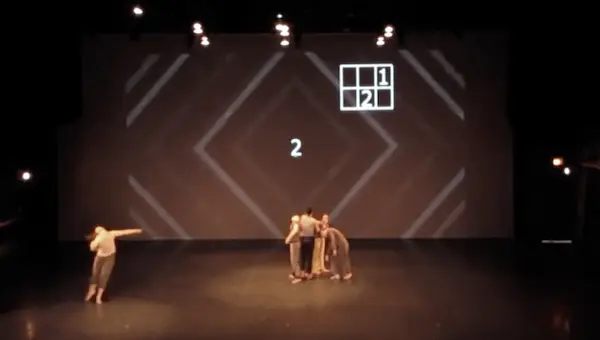

Ruy Zambrano
Building scalable data pipelines, AI agent architectures, and empowering the next generation of software & data engineers.
About Me
With an MSc in Computer Science from the University of York, I bridge complex cloud and big data engineering with hands-on coaching. I specialize in Python, SQL, AWS, and LLM Orchestration (LangGraph). To date, I've mentored over 100+ engineers from FTSE 100 companies while designing data pipelines, open-source utilities, and AI productivity tools.
The Slate Suite
The Slate Job Curator App
Modular, state-driven AI agent pipeline built with LangGraph (DAG) for deep semantic CV-to-job matching and real-time market ingestion.
Slate Focus
Chrome extension designed to eliminate context-switching and streamline focus workflows for developers and data professionals.
Slate Stack
Chrome extension helping developers inspect, manage, and interact with modern tech stacks seamlessly within the browser.
Open Source Libraries
LLM Catalogue
A curated resource and interactive framework for tracking, evaluating, and benchmarking open-source and enterprise Large Language Models.
Complexifier (PyPI)
Python data-augmentation library built on Pandas to simulate "dirty" datasets with programmatic anomalies, nulls, and outliers for ETL testing and educational pipelines.
Creative Technology in Performance
This has been coming a long time, now
This performance uses manipulated video of the dancer to create a monstrous digital double. Based on research into Victorian Gothic horror, the piece integrates themes of the uncanny through technological ambiguity—utilizing dim lights, localized sound, and projection mapping onto the dancer's skin.

We Found It With Each Other
Developed as part of an undergraduate thesis, this performance leverages technology to algorithmically segment choreography into distinct chunks. Tech is heavily integrated to track timing, automate lighting/audio cues, and generate real-time visual projections that highlight specific movement pathways.